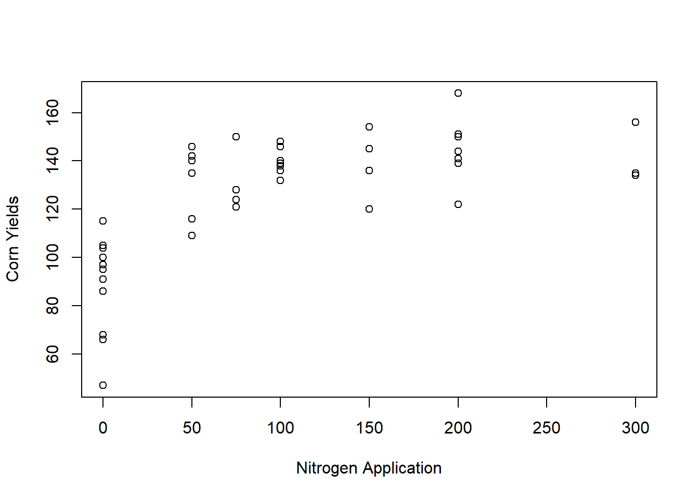
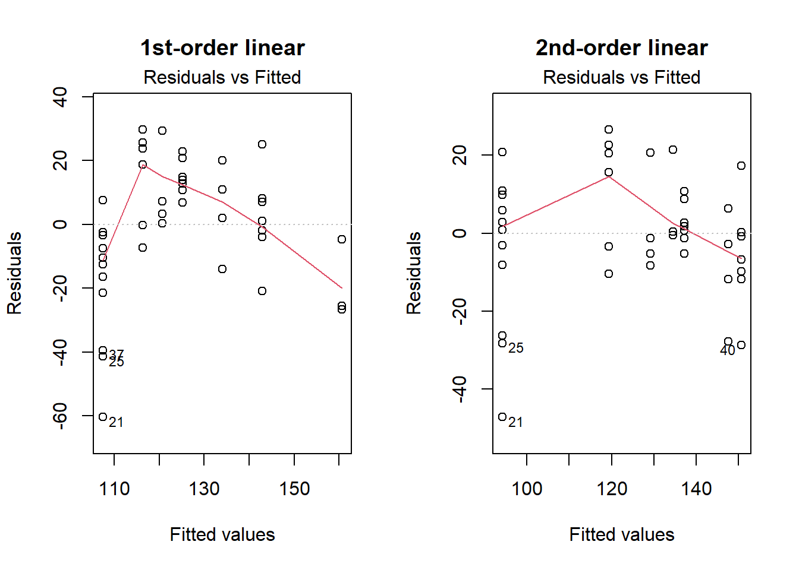
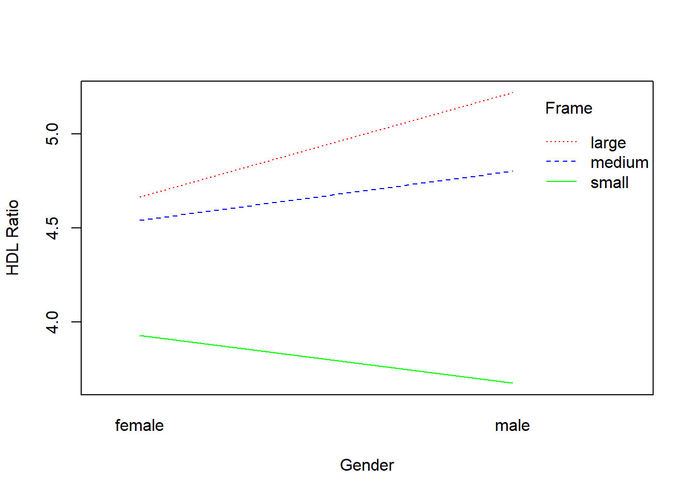
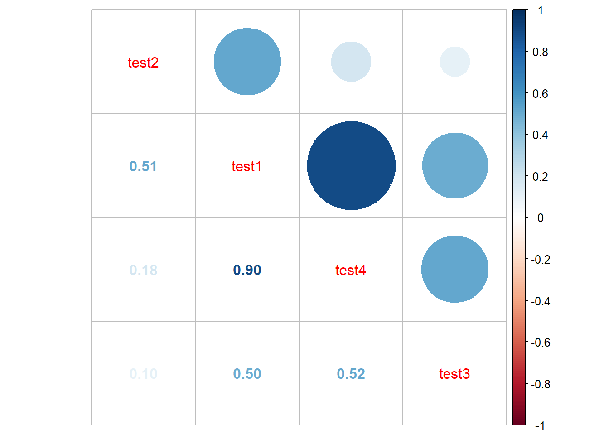

corn_data = read.table("data/cornnit.txt", header=T)
head(corn_data) yield nitrogen
1 115 0
2 128 75
3 136 150
4 135 300
5 97 0
6 150 75corn_data = read.table("data/cornnit.txt", header=T)
head(corn_data) yield nitrogen
1 115 0
2 128 75
3 136 150
4 135 300
5 97 0
6 150 75plot(y=corn_data$yield, x=corn_data$nitrogen, xlab="Nitrogen Application", ylab="Corn Yields")
The scatter plot suggests a non linear relationship between nitrogen application and corn yields because the scatter plot does not form a straight line and is instead high slope at the start then starts to level off towards the end.
fit1 = lm(yield ~ nitrogen, data=corn_data)
summary(fit1)
Call:
lm(formula = yield ~ nitrogen, data = corn_data)
Residuals:
Min 1Q Median 3Q Max
-60.439 -10.939 1.534 14.082 29.697
Coefficients:
Estimate Std. Error t value Pr(>|t|)
(Intercept) 107.43864 4.66622 23.02 < 2e-16 ***
nitrogen 0.17730 0.03377 5.25 4.71e-06 ***
---
Signif. codes: 0 '***' 0.001 '**' 0.01 '*' 0.05 '.' 0.1 ' ' 1
Residual standard error: 20.53 on 42 degrees of freedom
Multiple R-squared: 0.3962, Adjusted R-squared: 0.3818
F-statistic: 27.56 on 1 and 42 DF, p-value: 4.713e-06fit2 = lm(yield ~ nitrogen + I(nitrogen^2), data=corn_data)
summary(fit2)
Call:
lm(formula = yield ~ nitrogen + I(nitrogen^2), data = corn_data)
Residuals:
Min 1Q Median 3Q Max
-47.162 -7.092 0.368 10.058 26.571
Coefficients:
Estimate Std. Error t value Pr(>|t|)
(Intercept) 94.1620969 4.4067757 21.368 < 2e-16 ***
nitrogen 0.5794901 0.0800285 7.241 7.54e-09 ***
I(nitrogen^2) -0.0014831 0.0002787 -5.321 3.97e-06 ***
---
Signif. codes: 0 '***' 0.001 '**' 0.01 '*' 0.05 '.' 0.1 ' ' 1
Residual standard error: 15.98 on 41 degrees of freedom
Multiple R-squared: 0.6428, Adjusted R-squared: 0.6254
F-statistic: 36.9 on 2 and 41 DF, p-value: 6.817e-10par(mfrow=c(1,2))
plot(fit1, 1, main="1st-order linear")
plot(fit2, 1, main="2nd-order linear")
anova(fit1, fit2, test="F")Analysis of Variance Table
Model 1: yield ~ nitrogen
Model 2: yield ~ nitrogen + I(nitrogen^2)
Res.Df RSS Df Sum of Sq F Pr(>F)
1 42 17699
2 41 10470 1 7229.6 28.312 3.974e-06 ***
---
Signif. codes: 0 '***' 0.001 '**' 0.01 '*' 0.05 '.' 0.1 ' ' 1According to the anova test there is a significant relationship between yield and the extra predictor nitrogen^2. Thus, the second-order model is a better fit than the first-order model.
This the relationship between yield and nitrogen is non linear because the second-order model is a better fit since the nitrogen^2 predictor had a statistically significant relationship with the response variable yield.
diabetes = read.csv("data/diabetes.csv")
head(diabetes) age ratio gender frame diabetic
1 46 3.6 female medium 0
2 29 6.9 female large 1
3 58 6.2 female large 0
4 67 6.5 male large 0
5 64 8.9 male medium 0
6 34 3.6 male large 0mult = lm(ratio ~ age + gender + frame, data = diabetes)
summary(mult)
Call:
lm(formula = ratio ~ age + gender + frame, data = diabetes)
Residuals:
Min 1Q Median 3Q Max
-2.9760 -1.1535 -0.2371 0.8712 14.6783
Coefficients:
Estimate Std. Error t value Pr(>|t|)
(Intercept) 4.267848 0.347959 12.265 < 2e-16 ***
age 0.011385 0.005474 2.080 0.0382 *
gendermale 0.207224 0.175980 1.178 0.2397
framemedium -0.226777 0.213246 -1.063 0.2882
framesmall -0.970578 0.244779 -3.965 8.75e-05 ***
---
Signif. codes: 0 '***' 0.001 '**' 0.01 '*' 0.05 '.' 0.1 ' ' 1
Residual standard error: 1.674 on 385 degrees of freedom
Multiple R-squared: 0.07583, Adjusted R-squared: 0.06623
F-statistic: 7.897 on 4 and 385 DF, p-value: 3.985e-06There is not a significant difference in the ratio of HDL between males and females because the male coefficient has a p-value of \(0.2397\) which is greater than \(\alpha=0.1\) and additionally \(0\in[0.207224-(1.64)0.17598,0.207224+(1.64)0.17598]\). This means that the gender male coefficient does not differentiate significantly from baseline (gender = female)
summary(mult)$coefficients Estimate Std. Error t value Pr(>|t|)
(Intercept) 4.26784826 0.34795934 12.265365 2.024249e-29
age 0.01138544 0.00547431 2.079795 3.820548e-02
gendermale 0.20722412 0.17597989 1.177544 2.397057e-01
framemedium -0.22677652 0.21324632 -1.063449 2.882451e-01
framesmall -0.97057840 0.24477916 -3.965119 8.746412e-05The framesmedium predictor has a coefficients of \(-0.22677652\) with a std of \(0.21324632\) and p-value of \(0.2882451\). This means that the difference between a medium frame and a large frame is not statistically significant because the p-value is greater than \(\alpha=0.1\) and \(0\in [-0.22677652-(1.64)0.21324632, -0.22677652+(1.64)0.21324632]\).
The framessmall predictor has a coefficients of \(-0.97057840\) with a std of \(0.24477916\) and p-value of \(8.746412e-05\). This means that the difference between a small frame and a large frame is statistically significant because the p-value is smaller than \(\alpha=0.1\) and \(0\notin [-0.97057840-(1.64)0.24477916, -0.97057840+(1.64)0.24477916]\). More specifically, the average change in the response mean from a change from large frame to small frame is \(-0.97057840\).
interaction.plot(x.factor = diabetes$gender, trace.factor = diabetes$frame, response=diabetes$ratio, xlab="Gender", ylab="HDL Ratio", trace.label = "Frame", col=c("red","blue", "green"))
There is an interaction between gender and frame based on the interaction plot because the lines are not parallel. More specifically, it appears there may be an interaction between frame and gender because large/medium frame increases the HDL ratio when going from female to male but the small frame decreases the HDL ration when going from female to male.
int_model = lm(ratio ~ age + gender * frame + gender + frame, data = diabetes)
summary(int_model)
Call:
lm(formula = ratio ~ age + gender * frame + gender + frame, data = diabetes)
Residuals:
Min 1Q Median 3Q Max
-3.0129 -1.1097 -0.2470 0.8891 14.6982
Coefficients:
Estimate Std. Error t value Pr(>|t|)
(Intercept) 4.081987 0.383829 10.635 <2e-16 ***
age 0.011213 0.005471 2.050 0.0411 *
gendermale 0.536402 0.335492 1.599 0.1107
framemedium -0.052085 0.303152 -0.172 0.8637
framesmall -0.626892 0.331606 -1.890 0.0594 .
gendermale:framemedium -0.277684 0.421682 -0.659 0.5106
gendermale:framesmall -0.785332 0.485208 -1.619 0.1064
---
Signif. codes: 0 '***' 0.001 '**' 0.01 '*' 0.05 '.' 0.1 ' ' 1
Residual standard error: 1.673 on 383 degrees of freedom
Multiple R-squared: 0.08229, Adjusted R-squared: 0.06791
F-statistic: 5.724 on 6 and 383 DF, p-value: 1.021e-05anova(mult, int_model)Analysis of Variance Table
Model 1: ratio ~ age + gender + frame
Model 2: ratio ~ age + gender * frame + gender + frame
Res.Df RSS Df Sum of Sq F Pr(>F)
1 385 1079.1
2 383 1071.6 2 7.5455 1.3484 0.2609The interaction affect appears not to be significant at \(\alpha=0.10\) because the anova table resulted in a p-value of \(0.2609\) which is greater than our \(\alpha\). This means that the extra predictors do not have statistically significant relationship with the response mean HDL ratio.
job_data = read.table("data/jobprof.txt", header=T)
head(job_data) test1 test2 test3 test4 JBS
1 88 86 110 100 87
2 80 62 97 99 100
3 96 110 107 103 103
4 76 101 117 93 95
5 80 100 101 95 88
6 73 78 85 95 84X = subset(job_data, select=-c(JBS))
corrplot.mixed(cor(X), order="AOE")
The correlation matrix suggests possible multicollinearity problems because the correlation coefficient between test1 and test4 is \(0.9\) which is close to \(1\).
model = lm(JBS ~ test1 + test2 + test3 + test4, data=job_data)
summary(model)
Call:
lm(formula = JBS ~ test1 + test2 + test3 + test4, data = job_data)
Residuals:
Min 1Q Median 3Q Max
-8.7283 -2.6769 -0.7255 3.1096 9.3900
Coefficients:
Estimate Std. Error t value Pr(>|t|)
(Intercept) 100.88142 30.03086 3.359 0.00312 **
test1 0.84060 0.21337 3.940 0.00081 ***
test2 -0.19182 0.09142 -2.098 0.04879 *
test3 -0.04574 0.07258 -0.630 0.53570
test4 -0.58529 0.40537 -1.444 0.16427
---
Signif. codes: 0 '***' 0.001 '**' 0.01 '*' 0.05 '.' 0.1 ' ' 1
Residual standard error: 5.212 on 20 degrees of freedom
Multiple R-squared: 0.8014, Adjusted R-squared: 0.7617
F-statistic: 20.17 on 4 and 20 DF, p-value: 8.612e-07vif(model) test1 test2 test3 test4
15.172928 3.042143 1.391685 11.384328 test1 and test4 have VIF scores above \(10\) which suggests there is multicollinearity within the data.
library(MASS) ## this package is required for the stepAIC function
both_sel <- stepAIC(model, direction = "both")Start: AIC=86.97
JBS ~ test1 + test2 + test3 + test4
Df Sum of Sq RSS AIC
- test3 1 10.79 554.10 85.462
<none> 543.31 86.970
- test4 1 56.63 599.94 87.449
- test2 1 119.59 662.90 89.944
- test1 1 421.65 964.96 99.330
Step: AIC=85.46
JBS ~ test1 + test2 + test4
Df Sum of Sq RSS AIC
<none> 554.10 85.462
- test4 1 59.74 613.84 86.021
+ test3 1 10.79 543.31 86.970
- test2 1 113.74 667.84 88.129
- test1 1 411.30 965.40 97.342